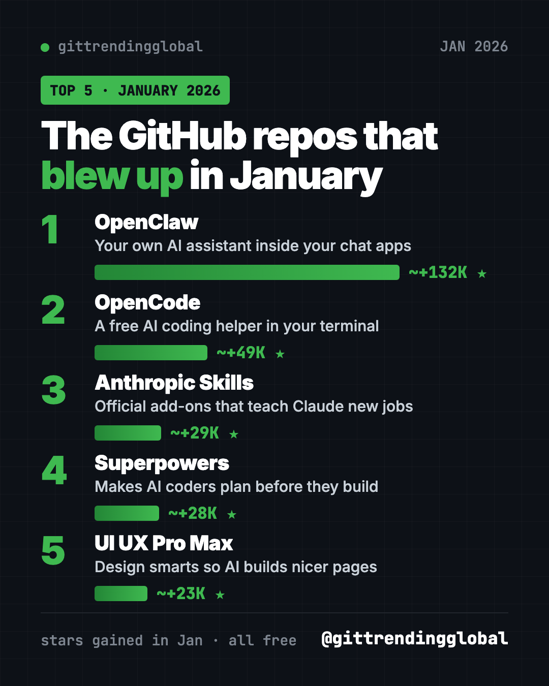
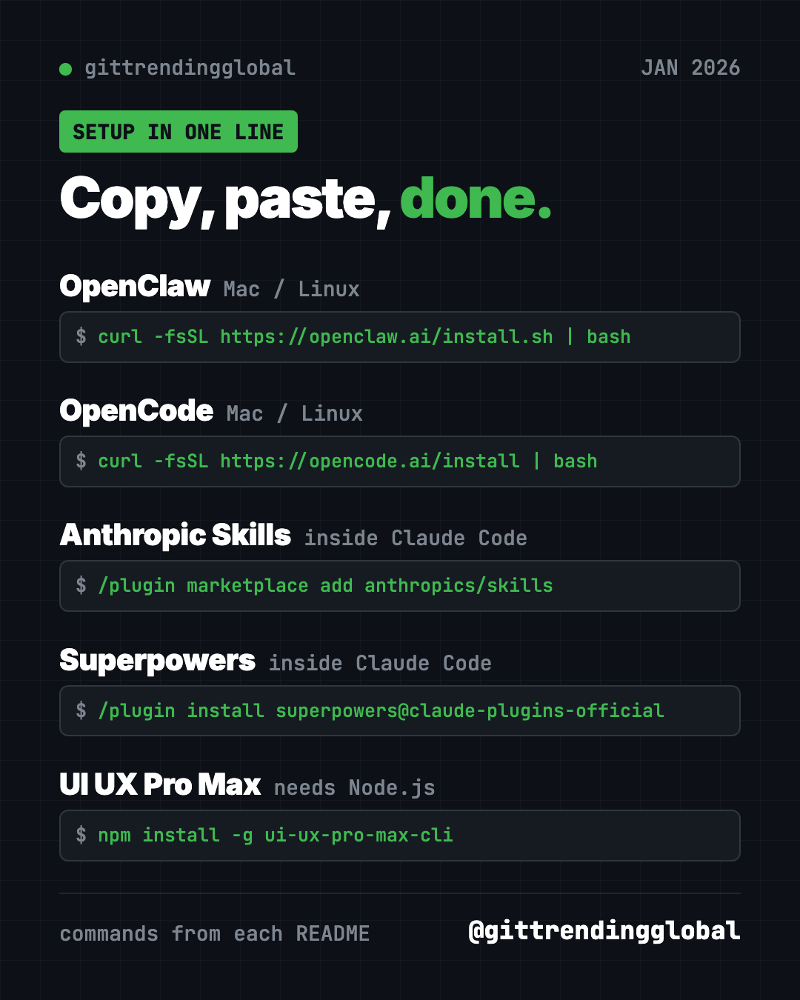
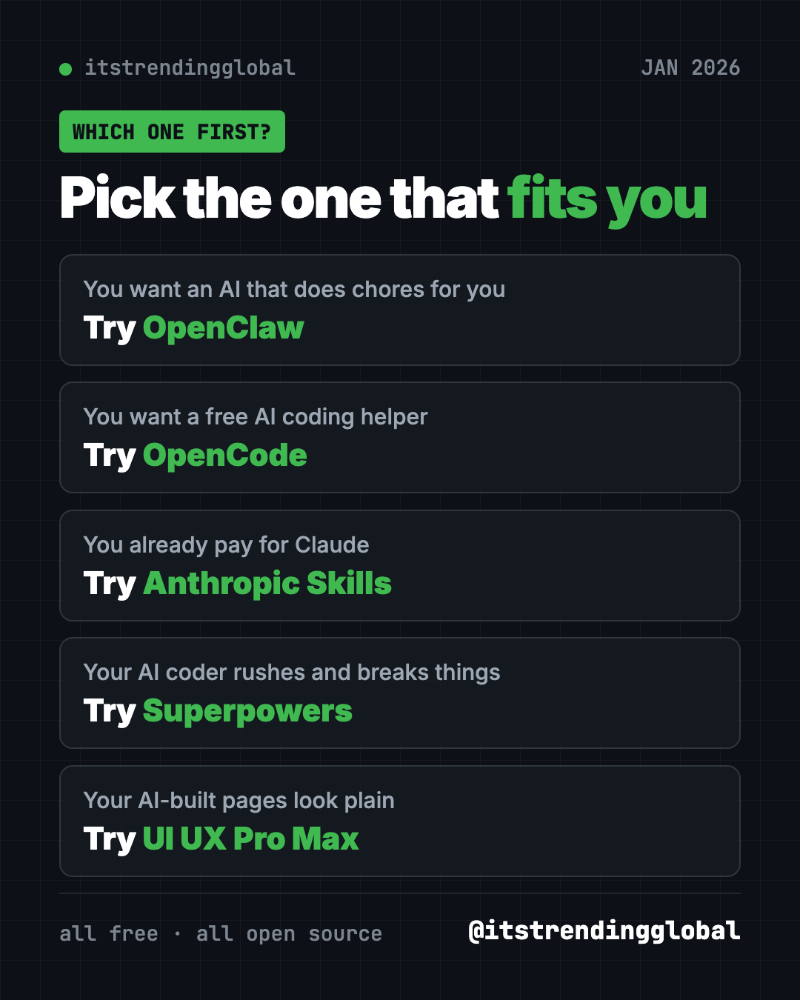

Best GitHub Repos of January 2026 (Free AI Tools)
- Published 15 Oct 2026
- Updated 16 Oct 2026
- 11 min read
- By the ITG Now team
In this guide (9)
- Key takeaways
- The 5 trending GitHub repos of January 2026 at a glance
- 1. OpenClaw: an AI assistant inside your chat apps
- 2. OpenCode: a free AI coding helper in your terminal
- 3. Anthropic's Skills: official add-ons that teach Claude new jobs
- 4. Superpowers: make your AI coder plan first
- 5. UI UX Pro Max: design smarts for AI-built pages
- Which one should you try first?
- FAQ
The best GitHub repos January 2026 had to offer were OpenClaw, OpenCode, Anthropic's Skills, Superpowers and UI UX Pro Max. All five are free, and together they show where AI went this month: out of the chat box and into your own computer.
A GitHub star works like a bookmark or a "like." When a project collects tens of thousands of stars in a few weeks, people clearly want it. For each repo below you get what it does, who it suits, the exact setup line, and a prompt you can hand to an AI helper so it does the setup for you.
Key takeaways
- OpenClaw was the runaway hit of January 2026, with about 132,000 new stars. It is a personal AI assistant that lives in your chat apps.
- OpenCode is a free AI coding helper that runs in the terminal.
- Anthropic's Skills is the official set of add-ons that teach Claude new jobs, like making Word, PDF and PowerPoint files.
- Superpowers makes AI coding helpers stop, ask questions and plan before they build.
- UI UX Pro Max gives an AI coder a design library, so the pages it builds look less plain.

The 5 trending GitHub repos of January 2026 at a glance
| Repo | What it does | Who it's for | Free? | Works on |
|---|---|---|---|---|
| OpenClaw | AI assistant that answers in WhatsApp, Telegram, Slack and more | Anyone who wants an AI that does chores | Yes (MIT), AI model may cost | Mac, Windows, Linux, phone apps |
| OpenCode | AI coding helper in your terminal | People who build apps or scripts | Yes (MIT), AI model may cost | Mac, Windows, Linux |
| Anthropic's Skills | Ready-made skills for Claude | Claude users | Yes to use, mixed licenses | Claude Code, Claude.ai, Claude API |
| Superpowers | A plan-first routine for AI coders | Anyone using an AI coding helper | Yes (MIT) | Claude Code, Codex and many more |
| UI UX Pro Max | Design rules, colors and fonts for AI coders | People who build websites with AI | Yes (MIT), paid Premium exists | Claude Code, Cursor, Codex and more |
Star gains are rough January 2026 numbers. Total star counts below were checked on GitHub on October 16, 2026.
💡 Tip: Some steps use the "terminal." That is a plain text window where you type commands. On a Mac, open the app called Terminal. On Windows, open PowerShell. Paste one line, press Enter, and wait.
1. OpenClaw: an AI assistant inside your chat apps
Stars: about +132K in January · about 392K total
What it is: OpenClaw is a free, open-source AI assistant that runs on your own computer. You talk to it in apps you already use, like WhatsApp, Telegram, Slack, Discord, iMessage and Teams. The README lists more than 20 chat apps, plus apps for Mac, iPhone, Android, Windows and Linux. Your memory, settings and passwords stay on your own machine. The AI "brain" is a plug-in, so you can pick Claude, Codex or a model that runs locally.
Who it's for: Busy people who want an assistant that does tasks, not just chats. Also anyone curious about AI agents.
How you'd use it:
- Text it from WhatsApp while you are out, and have it work on your home computer.
- Ask it to sort a messy folder or draft a reply while you do something else.
- Share one assistant with a small team in Slack.
Install it: Copy and paste this on Mac or Linux:
curl -fsSL https://openclaw.ai/install.sh | bash
On Windows, paste this into PowerShell instead:
iwr -useb https://openclaw.ai/install.ps1 | iex
A setup wizard opens on its own. It checks your AI model, makes a workspace and connects things up. When it is done, run openclaw dashboard to open the control page and send a test message.
Or let Claude or Codex do it: Claude Code and OpenAI Codex are AI helpers that can run setup steps on your computer for you. Paste this into one of them:
Install OpenClaw on this computer from https://github.com/openclaw/openclaw
using the official install script in its README. Walk me through the
onboarding wizard one step at a time, then help me connect Telegram
and send one test message.
⚠️ Heads up: OpenClaw itself has no paid tier. But the AI model you connect, such as Claude or OpenAI, may charge you for use. Your messages go to that model provider.
See OpenClaw on GitHub · Read our full OpenClaw guide
2. OpenCode: a free AI coding helper in your terminal
Stars: about +49K in January · about 214K total
What it is: OpenCode is an open-source coding agent. That means an AI helper that reads your project, writes code and runs commands. It lives in the terminal, and a desktop app is in beta. It comes with two built-in modes. "Build" can change files. "Plan" only reads and suggests, and asks before it runs anything. You switch between them with the Tab key.
Who it's for: Hobby builders, students and developers who want an AI coding helper they can inspect and change.
How you'd use it:
- Ask it to explain a project you downloaded but don't understand.
- Use Plan mode to get a safe, read-only to-do list before any changes happen.
- Have it build a small script, like one that renames all your photos by date.
Install it: Copy and paste this on Mac or Linux:
curl -fsSL https://opencode.ai/install | bash
On a Mac with Homebrew, the README recommends this instead:
brew install anomalyco/tap/opencode
On Windows, the README lists scoop install opencode or choco install opencode. There is also a desktop download at opencode.ai/download. Then connect an AI model, as shown in the docs at opencode.ai/docs.
Or let Claude or Codex do it:
Install OpenCode on this computer from https://github.com/anomalyco/opencode
using the method its README recommends for my system. Then show me how to
connect a model, open my project folder, and switch to Plan mode with Tab.

3. Anthropic's Skills: official add-ons that teach Claude new jobs
Stars: about +29K in January · about 181K total
What it is: This is Anthropic's own collection of skills for Claude. A skill is a folder of instructions and helper files that Claude loads when it needs them. The examples cover art, music and design, testing web apps, and company writing and branding. It also includes the skills behind Claude's Word, PDF, PowerPoint and Excel features. Many skills are open source. The document skills are "source-available," which means you can read them but they are not open source.
Who it's for: Anyone who uses Claude and wants it to follow a set routine. Also people who want to learn how to write their own skills.
How you'd use it:
- Ask Claude to pull the form fields out of a PDF.
- Have it turn notes into a tidy PowerPoint deck.
- Copy the template skill and write one for your own weekly report.
Install it: Inside Claude Code, copy and paste this:
/plugin marketplace add anthropics/skills
/plugin install document-skills@anthropic-agent-skills
On Claude.ai, the README says paid plans already have these example skills.
Or let Claude or Codex do it: Once installed, just ask. Here is the README's own example:
Use the PDF skill to extract the form fields from path/to/some-file.pdf
💡 Tip: The README says these skills are for demos and learning. Test them on your own files before you trust them with anything important.
See Anthropic's Skills on GitHub
4. Superpowers: make your AI coder plan first
Stars: about +28K in January · about 300K total
What it is: Superpowers is a free set of skills plus a working method for AI coding helpers. When you start building something, the helper does not jump straight into code. It asks what you really want. It shows you a short plan in small chunks you can read. After you say "go," it works through the plan step by step and checks its own work. The README says it can often work on its own for a couple of hours without drifting from the plan.
Who it's for: Anyone whose AI coder rushes, guesses, or breaks things.
How you'd use it:
- Describe an app idea and let it ask you the questions you forgot.
- Get a written plan you can read before any code is touched.
- Leave it to build a small project while you are away.
Install it: Inside Claude Code, copy and paste this:
/plugin install superpowers@claude-plugins-official
In the Codex app, open Plugins in the sidebar and add Superpowers from the Coding section. The README has steps for many more helpers too.
Or let Claude or Codex do it:
Install the Superpowers plugin from https://github.com/obra/superpowers
for the AI coding tool I am using. Then help me plan a simple to-do list
web page using its brainstorming step, and show me the plan before coding.
See Superpowers on GitHub · Read our full Superpowers guide
5. UI UX Pro Max: design smarts for AI-built pages
Stars: about +23K in January · about 136K total
What it is: UI UX Pro Max is a skill that gives your AI coder a design library. The README lists 79 searchable UI styles, 192 color palettes, 74 font pairings and 119 UX guidelines. It also covers 22 tech stacks, from React to SwiftUI. You just ask for a page, and the skill kicks in on its own. The free version is this repo. A paid Premium version adds brand and logo tools.
Who it's for: Anyone building websites or apps with AI who is tired of the same plain look.
How you'd use it:
- Ask for a landing page for your small business and get a matching color set and fonts.
- Build a dashboard in dark mode that still reads well.
Install it: You need Node.js (a free program from nodejs.org) and Python 3. Copy and paste this:
npm install -g ui-ux-pro-max-cli
cd /path/to/your/project
uipro init --ai claude
Swap claude for cursor, codex or another helper from the README list.
Or let Claude or Codex do it: After install, try one of the README's example prompts:
Build a landing page for my SaaS product
Which one should you try first?
- You want an AI that does chores for you: start with OpenClaw. The installer walks you through it.
- You want a free AI coding helper: try OpenCode. Plan mode is a safe place to start.
- You already use Claude: add Anthropic's Skills for better documents.
- Your AI coder keeps making a mess: install Superpowers.
- Your AI-built pages look plain: add UI UX Pro Max.

For the news side of the month, read January 2026 in AI. Then see what came next in February's best GitHub repos, or the 5 biggest GitHub repos of Q1 2026.
FAQ
What were the best GitHub repos of January 2026?
By stars gained, the top five were OpenClaw, OpenCode, Anthropic's Skills, Superpowers and UI UX Pro Max. OpenClaw led by a wide margin, with about 132,000 new stars.
Are these trending GitHub repos free?
Yes, all five are free to download and use. Some connect to paid AI models, and UI UX Pro Max also sells a Premium version, but the repos themselves cost nothing.
Do I need to code to use them?
Not for OpenClaw, which has a guided installer. For the others, paste our ready-made prompt into Claude Code or Codex and let it handle the setup.
What is a skill in Claude?
A skill is a folder of instructions and helper files that teaches Claude one kind of job. Claude loads it only when the task needs it.
Is OpenClaw safe to run on my computer?
It keeps your memory and passwords on your own machine, and the README says it only sends a daily version check by default. Your chats still go to the AI model provider you choose.
Keep reading

Trending GitHub Repos October 2026: The Top 5 So Far
The trending GitHub repos of October 2026 so far: a free Photoshop-style editor, an AI art studio, a big AI model for gaming PCs and more, explained.

Trending GitHub Repos This Week, Oct 5 2026: The Top 5
Trending GitHub repos this week Oct 5 2026: Matt Pocock's skills, the openGym workout tracker, e2e testing, HyperFrames video and claude-mem memory.

GitHub Trending September 28, 2026: Hindsight and Paperclip
GitHub trending September 28 2026: Hindsight, Paperclip, NVIDIA's OpenShell and a free 542-lesson AI course, with setup steps for each.